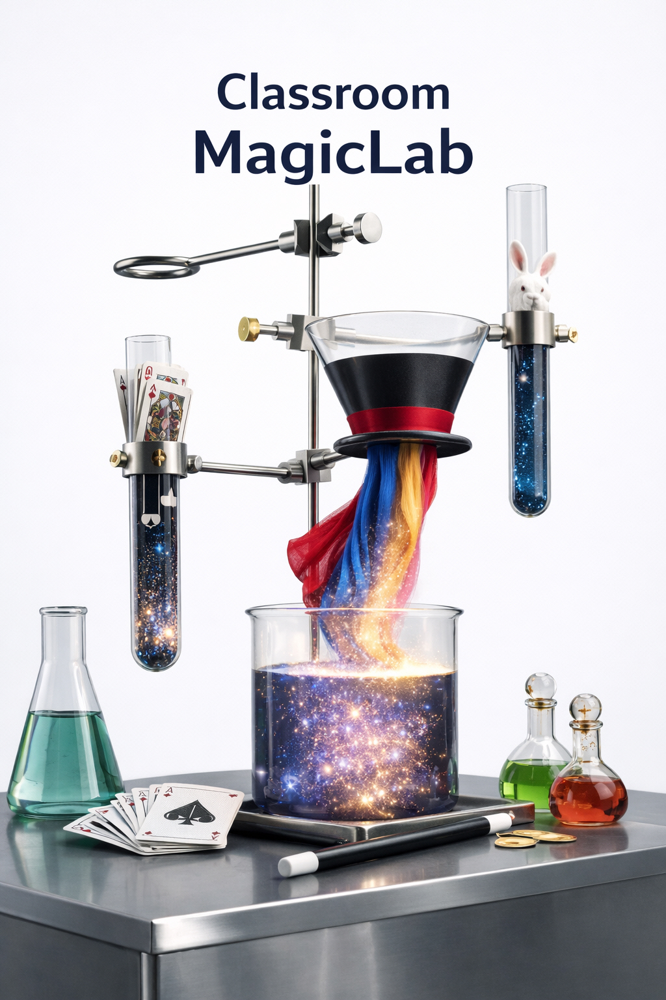

교실형 · 체험형 수업
마술사 직업체험
Classroom Magic Lab — ‘보는 마술’에서 ‘하는 마술’로
한 줄 소개
공연으로 흥미를 열고, ‘마술의 원리·윤리·표현’을 배우며 직접 시연까지 해보는 직업체험형 진로 수업.
수업 목표
- 마술과 ‘속임수(사기)’의 차이를 구분하고, 공연예술로서 마술의 윤리를 이해한다.
- 마술사의 진로(역량·훈련·현장)를 탐색하고, 관련 직무(기획/공연/제작/교육)를 확장해본다.
- 원리를 바탕으로 마술을 재현하고, 관객 앞에서 전달력(말·동작·시선)을 개선한다.
- 나의 강점(잘하는 것)과 흥미(좋아하는 것)를 연결해 ‘나만의 진로 힌트’를 정리한다.
프로그램 구성(총 80분)
| 도입 15분 |
마술사의 공연 · 아이스브레이킹 (간단 카드마술 등) 오늘 수업의 약속: “비밀은 존중, 질문은 자유롭게, 친구는 안전하게” |
|---|---|
| 본활동 55분 |
1) 마술과 사기 — 공통점/차이점 추리로 ‘마술의 정의’ 세우기 2) 마술사의 길 — 마술사가 되는 방법/연습 루틴/무대 경험 이야기 3) 마술의 종류 — 클로스업·스테이지·일루전 비교 및 특징 말해보기 4) 나도야 마술사 — 원리 파악 → 연습 → 짝과 리허설 5) 직접 마술 시연 — 발표 + 피드백(시선/템포/동선/대사)로 완성도 올리기 6) 나도야 마술사 2 — 원심력(과학) 마술 + 심리(인지) 마술 체험 |
| 마무리 10분 |
마술사의 미래 전망 — 직업의 확장(공연/교육/콘텐츠/기획) Q&A — 궁금한 점 질의응답 + 진로 연결 한 줄 정리 |
* 위 시간 구성은 학교 상황에 맞게 45~90분 범위로 조정 가능합니다.
활동 상세
- ‘마술과 사기’ 토론: “왜 마술은 허용되고, 사기는 안 될까?”를 예시 상황(광고/가짜뉴스/게임 아이템 등)으로 확장해 생각해봅니다.
- 표현 훈련: 같은 트릭이라도 ‘말과 동작’에 따라 완성도가 달라짐을 시범으로 보여주고, 학생 발표에 1~2개 피드백 포인트만 딱 잡아 개선합니다.
- 협업 요소: 2인 1조로 리허설(관객 역할/마술사 역할)을 번갈아 하며 관찰 체크리스트로 서로 코칭합니다.
세부 사항
- 대상
- 초등 고학년 ~ 중·고 (학년/난이도별 맞춤 진행)
- 진행
- 교실/시청각실/강당 모두 가능 (교실형 권장: 참여도↑)
- 인원
- 1학급(20~35명) 권장 / 최대 60명 내외(보조진행 필요 시 협의)
- 준비
- 무선마이크(가능 시), 스피커/노트북, 빔프로젝터(선택), 책상 이동 가능 공간
- 운영
- 발표 학생 보호를 위해 ‘자원자 우선’ + 교사 협조 하에 진행
- 안전
- 날카로운 소품/화기 사용 없음(기본) / 원심력 도구는 안전거리 안내 후 진행
마술도구 선택(2개 선택)
학교/학년 분위기에 맞춰 아래 예시 중 2개를 선택해 체험 파트를 구성합니다.
| ① 마술링 |
서로 떨어져 있는 링/줄이 신호에 따라 연결되는 도구. 과학적 원리(원심력)를 활용한 체험형 구성. 영상 보기 |
|---|---|
| ② 마술 주사위 |
통 안의 주사위 숫자를 ‘투시’하는 콘셉트의 마술. 관찰/추리/연출 포인트를 배우기 좋음. 영상 보기 |
| ③ 숫자카드 |
관객이 생각한 숫자를 맞추는 마술. 심리(선택 유도/정보 설계) 개념을 쉽게 연결 가능. 영상 보기 |
* 도구는 학교 상황(학년/인원/공간)에 따라 교체·조정 가능합니다.
성과물(수업 끝나고 남는 것)
- 학생 1인 1개 이상 ‘직접 시연 가능한’ 마술도구 (난이도 조절)
- 발표 경험 + 피드백을 통한 표현력 개선(말/동작/시선)
수업 현장 사진


문의/진행
일정/학년/인원에 따라 구성(체험 비중, 발표 방식, 도구)을 맞춤으로 조정합니다.